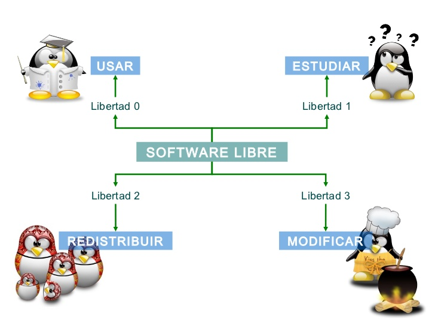

Desarrollo de software colaborativo como modelo de negocios
Proceso de colaboración entre el consumidor y el desarrollador
Aplicación en la tecnología web
Características del desarrollo colaborativo
Diferencias entre Desarrollo Ágil y Desarrollo Colaborativo
Desarrollo Ágil
Centrado en los desarrolladores o centrado en el usuario
Metodologías para el desarrollo colaborativo
eXtreme Programming
Peer review
Ley de Linus
Involucrando a los usuarios
Roles de usuarios
Herramientas de comunicación
¿Qué es el desarrollo colaborativo?
El Desarrollo colaborativo de software es un
modelo de desarrollo de software cuyas bases son la disponibilidad
pública del código y la comunicación,
usualmente a través de Internet.
Este modelo se hizo popular a raíz de su uso para el desarrollo del
Kernel de Linux en 1991 y se continua usuando mayormente en freeware,
software libre y Commons-based peer production (CBPP).
También se usa para ciertos tipos de modelos de desarrollo, como el
modelo de desarrollo Iterativo y Ágil, a través del cual se lanzan
las etapas del programa para la retroalimentación del público,
impulsando el desarrollo del programa.
¿Qué tipo de proyectos consideras que serían éxitosos usando la
metodología de desarrollo colaborativo?
Cabe comentar que no es siempre conveniente escoger y aplicar una
metodología de forma estricta. Es importante entenderla y conocer qué
nos puede aportar a nuestro proyecto, para aplicarla en esas fases o
procesos en los que nuestro equipo o nuestros usuarios estén más
cómodos con ella, y no al revés.
¿Qué es el software libre?
Software Libre se refiere a la libertad de los usuarios para ejecutar,
copiar, distribuir, estudiar, cambiar y mejorar el software.

El desarrollo colaborativo es muy compatible con el software libre
porque los proyectos de software libre publican el código fuente de
cualquier programa publicado, por lo que no tienen el secreto para
ocultar sus comunicaciones y el desarrollo en curso.
Este modelo de desarrollo es detallado y examinado por
Eric Raymond
en su libro
The Cathedral and the Bazaar,
donde lo compara con un modelo Bazar generalmente seguido por
organizaciones jerárquicas.
El mundo del Software Libre es como un bazar con muchos comerciantes
diferentes que ofrecen sus mercancías.
El desarrollo empresarial, por el contrario, está estructurado como
los sindicatos religiosos que construyeron las catedrales medievales.
Los bazares ofrecen mucha competencia, pero sin orden alguno. Las
catedrales estaban sometidas a la dirección de jerarquías sacerdotales,
que aprovechaban la riqueza de la ciudad para construir el proyecto de
un solo arquitecto.
El libro
La catedral y el bazar
de Eric Raymond, influyó en la decisión de la empresa AOL-Time Warner
de liberar el código fuente del navegador Netscape, dando origen al
proyecto Mozilla.
A diferencia del modelo de La Catedral, en el modelo del Bazar existe
la norma de "Libere rápido y a menudo", que recomienda liberaciones
rápidas y frecuentes del producto en ciclos cortos, permite detección
y corrección temprana de errores antes que se conviertan en errores
grandes.
¿Crees que un software privativo podría utilizar la metodología de
software colaborativo de manera exitosa?
Desarrollo de software colaborativo como modelo de negocios
Independientemente de sus orígenes dentro de la industria del software,
la mayoría de las disciplinas tecnológicas utilizan actualmente el
Desarrollo de software colaborativo.
Su uso generalizado se atribuye a su efectividad.
Hoy en día, el desarrollo de software colaborativo ha pasado de su
significado original y sus vínculos con la codificación de código a
la de describir una relación entre el usuario final y el
desarrollador.
El término de hoy incluso ha perdido su conexión a veces con el
desarrollo de software.
Su función principal se vuelve tan efectiva como un modelo de negocio:
el proceso de colaboración entre el consumidor y el
desarrollador.
En otras palabras, la idea inicial de que el software que se está
creando es de código abierto, se ha eliminado del significado
original del término.
El modelo de negocio se aplica igualmente a muchos campos de la
tecnología web, incluidos, entre otros, los diseñadores web, los
desarrolladores web, los fabricantes de aplicaciones y widgets, los
creadores de redes sociales y, como su nombre lo indica, la
arquitectura de software.
El término se usa principalmente para describir un modelo de negocios,
la filosofía o metodología de una compañía sobre cómo maneja el
desarrollo del proyecto desde la idea inicial del cliente hasta el
cumplimiento final y la implementación para el usuario final.
La relación entre el usuario final y el desarrollador que desarrolla
el producto ocupa un lugar central.
Siempre que el usuario final inicie el proyecto y el desarrollador
forme una unidad de colaboración de lo que aparentemente se aplica
el término.
Características
Desarrollo descentralizado y distribuído.
Uso de diversas herramientas de comunicación asíncronas.
Asignación de roles definidos.
Múltiples colaboradores con competencias diversas.
Generalmente el desarrollo voluntario, no remunerado
Liberación rápida y frecuente.
Aplicación del Modelo del Bazar.
El software estará listo cuando esté listo, mientras tanto habrá
que esperar.
Diferencias entre Desarrollo Ágil y Desarrollo Colaborativo
Desarrollo Ágil es un término que se encuentra muy cerca
pero que tiene un componente o aspecto diferente. Agile Development
está más orientado a los desarrolladores y Desarrollo Colaborativo
está más orientado al usuario.
Sin embargo, ambos son los mismos en términos de utilizar la
colaboración como un método para impulsar el proyecto.
Metodologías para el desarrollo colaborativo
eXtreme Programming
La programación eXtrema, es una de las metodologías
llamadas "ágiles", para el desarrollo de proyectos de software.
Se basa en los principios de la simplicidad, la comunicación, la
retroalimentación y el coraje para implicar a todo el equipo (y a los
usuarios o clientes) en la gestión del proyecto. Esta metodología de
la Ingeniería de Software, aplica perfectamente al desarrollo de
Software Libre.
Peer Review
En el modelo de desarrollo colaborativo es posible la revisión
por pares Peer Review a gran escala de los cambios
y commits del software.
Ley de Linus
"Dado un número suficientemente elevado de ojos, todos los
errores se vuelven obvios".
Muchos desarrolladores de software e investigadores coinciden en
que el desarrollo colaborativo es una de las mejores maneras de
identificar la mayor cantidad posible de errores en un programa
sin dejar de ser eficiente.
Otra forma en que esto se ha establecido es refiriéndonos al mismo
principio aplicado al código fuente.
"si lo publicas, alguien lo arreglará"
En tu experiencia, ¿cómo se ha generado la revisión en pares?
¿les ha dado resultados en la mejora de la calidad?
Involucrando a los usuarios
Uno de los puntos clave en el desarrollo colaborativo es involucrar a
los usuarios.
Roles de usuarios
Núcleo 1-3
Desarrollan y mejoran contínuamente, mantienen el código oficial
Comunidad Medular 5-10
Mantienen la web, wiki, cvs, contribuyen dinero, prueban
Comunidad Contribuyente General 100-200
Usan, contribuyen extensiones, patches, participan en las listas
Usuarios Pro-Activos / Integradores 1.000-10.000
Usan, reportan bugs, patches, participan en las listas
Usuarios Generales 10.000-100.000-1.000.000
Solo usan, no contribuyen código, rara vez reportan un bug,
pueden participar en listas de usuarios
Muchas organizaciones han creado programas especiales para facilitar
la inscripción de nuevos colaboradores.
En un principio los desarrolladores se comunicaban mediante listas de
correo en las redes precursoras de Internet y en la medida en que se
desarrollaba éstas, también lo hacia su manera de comunicarse.
Con el actual crecimiento de la red y los nuevos lenguajes de
desarrollo web, hemos llegado a un punto en el que la cantidad de
servicios ofrecidos en portales para los desarrolladores e ingenieros
de software es enorme, y no sólo abarca herramientas que ayudan a
éstos en su desarrollo diario, sino que ponen en contacto a
patrocinadores de proyectos con desarrolladores, de modo que el
software libre pueda crecer y expandirse.